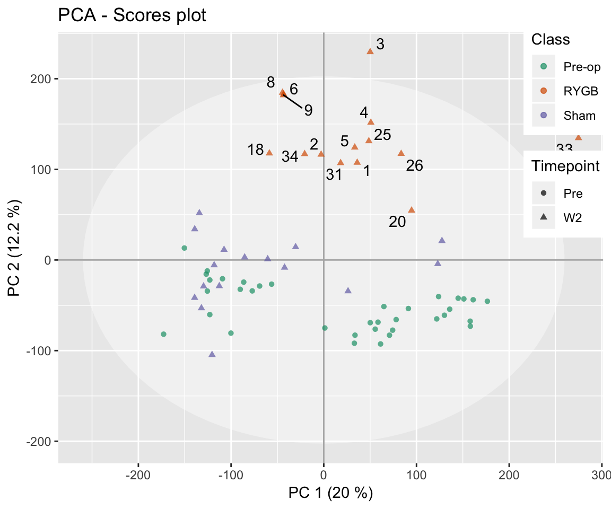
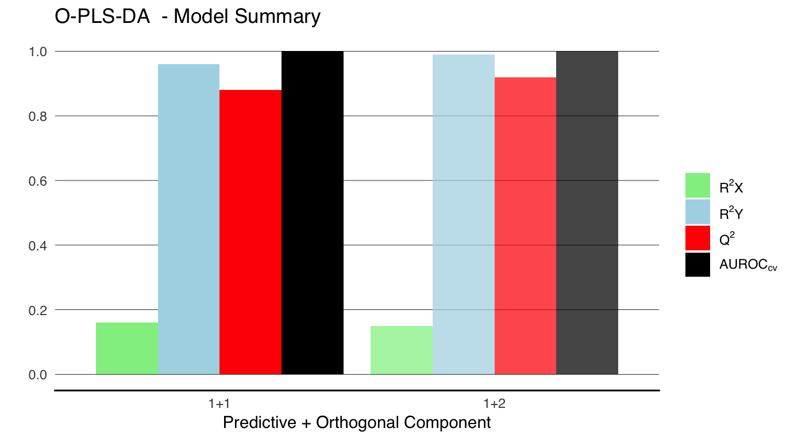
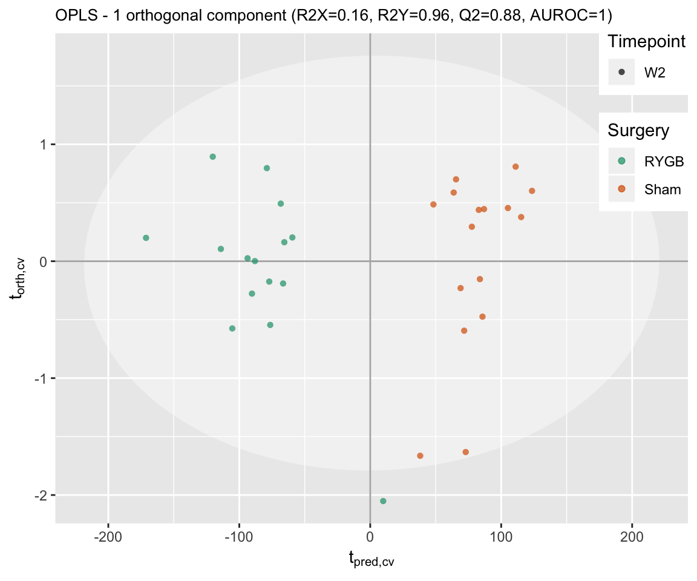
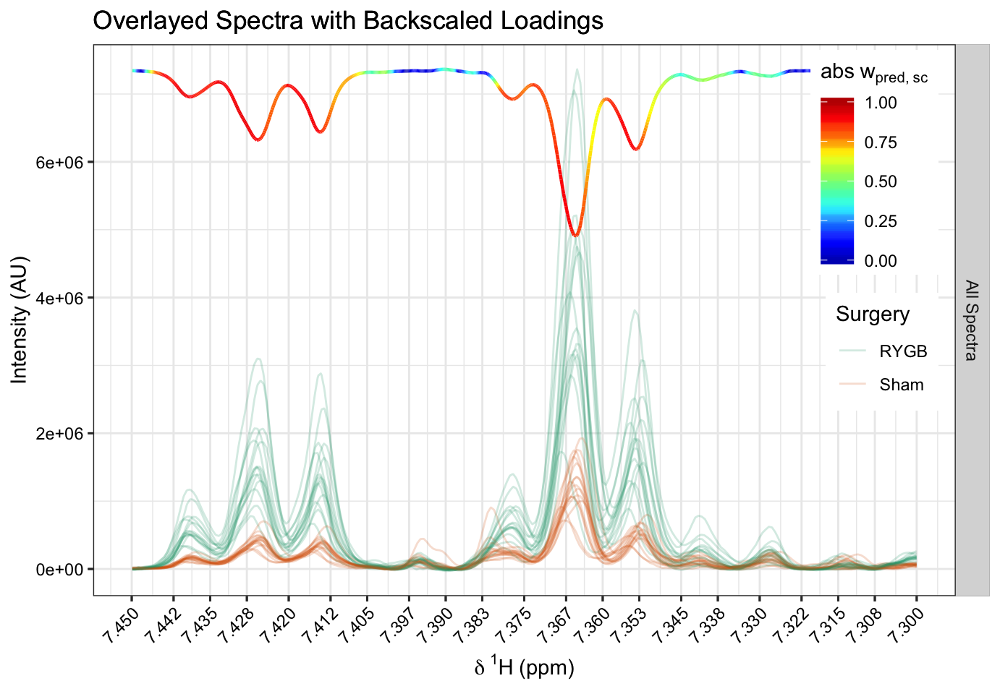

Multivariate Statistical Analysis
This vignette documents a typical multivariate statistical analysis workflow for NMR-based metabolic profilig using the MetaboMate R package. Example data represent Proton NMR spectra of murine urine samples collected before and after bariatric or sham surgery1. Data have been pre-processed with MetboMate functions including spectral calibration, excision of chemical shift regions representing noise or unwanted signals and normalisation to account for different sample dilutions. Please see Data Preprocessing vignette for further information on data pre-processing.
Prerequisites
I recommend to install RStudio. RStudio is an open-source integrated development environment for R, which includes a code editor that highlights syntax, enables quick and easy access to help pages, improves workspace management and offers various tools for plotting, history and debugging. Simply put, it makes working with R a lot more efficient.
Let’s get started with the analysis:
# For reproducibility
set.seed(153)
# Load package
library(MetaboMate)Loading example data
First, let’s import the bariatric surgery data with the following R commands.
# Load data
data(bariatric)
# Declare variables
X.pqn<-bariatric$X.pqn # NMR matrix
ppm<-bariatric$ppm # ppm vector
meta<-bariatric$meta # Metadata
an<-bariatric$an # Sample annotationFor multivariate analysis the following variables should be in the R workspace:
- X.pqn - preprocessed NMR data matrix, with rows representing spectra and columns ppm variables
- ppm - ppm vector, its length equals to the number of columns of X.pqn
- an - Sample annotation
- meta - Spectrometer metadata (this is not essential but useful for this tutorial)
Visual inspection of the NMR data
Let’s start with a visual inspection of the pre-processed NMR spectra using the matspec() function:
# visualise first ten spectra
matspec(ppm, X.pqn[1:10,], shift = c(0,10))
The pre-processed specra range from 0.5 to 9.5 ppm. If you have some experience in NMR spectroscopy you might suspect some unusual (and interesting) chemical shifts in the above plot. Most of these signals are endogenous, some are induced by the surgical procedure and others are clearly of microbial origin. We will find out more about this in the Metabolite Identification vignette of MetaboMate (currently work in progress).
Unsupervised Multivariate Analysis
Let’s start with an exploratory analysis approach using Principal Component Analysis (PCA). This projection method summarises the data by weighting and linearly combining the orginal variables, to derive a latent (in the sense of unobserved) factor, so called principal component (PC). A PC is basically a new coordinate axis that is a weighted composite of the original variables. The weighting of each original variable is mainly based on its variation across samples and collinear variables have similar weightings. Usually, more than one principal component are calculated, and while each original variable is represented in each component, their weightings (also called loadings) change and are orthogonal (unrelated) to each other. In metabonomics, spectroscopic data are usually highly dimensional and collinear, and PCA allows to become a fairly good overview of the main sources of variation in the data by looking at the first few PCA components.
Calculating a PCA model can be achieved with the pca() function. Its input arguments are the pre-processed NMR matrix (X=X.pqn), information on how many prinicipal components should be fitted (pc=2) and centering and scaling parameters. Here the data will be unit variance scaled (scale=“UV”) and mean centered (center=TRUE).
# Perform PCA
pca.model=pca(X=X.pqn, pc=2, scale='UV', center=TRUE)
#> iterations: 15
#> iterations: 30
#> [1] 67 2
#> [1] 56357 2Plotting PCA scores can be achieved with the plotscores() function. The minimum input arguments are a PCA_Metabomate object (model=pca.model, this is produced by the pca() call), the axis definition (pc=c(1,2)) and a list object (an) with its first element specifying the colouring.
Here we colour according to the performed surgical procedure which can be either none (Pre-op), Roux-en-Y gastric bypass (RYGB, a specific type of bariatic surgery) or Sham2. The latter is really a control group that was included to account for incidential effects induced by the anesthesia, incision, etc.
# Plot PCA results: scores of the first two components
plotscores(model=pca.model, pc=c(1,2), an=list(Surgery=an$Class), title='PCA - Scores plot')
The scatterplot above shows PCA scores of the first two principal components (PC 1 and PC2) plotted against each other. In the scores plot, every point represents an NMR spectrum of a urine sample. The axis labels in parenthesis describe the amount of variation that is modelled by the repsective principal component, relative to the total amount of variablity in the data (this is also termed R2). The ellipse is the Hotelling’s T2 which is a multivariate generalisation of a 95% confidence interval that can be used to spot outlier samples.
Additional graphics parameters can be passed on to plotscores(). For example, point shape and labels are specified as elements two and three of the an list argument, repsectively. See the following code for an example:
# define scores that should be labelled
idx<-which(pca.model@t[,2]>20 & an$Class=='RYGB') # PC 2 scores above 20 and in group RYGB
# construct label vector with mouse IDs
outliers<-rep('', nrow(an))
outliers[idx]<-an$ID[idx]
# Plot PCA scores, colour according to class, point shape according to time of sample collection and label outliers
plotscores(model=pca.model, pc=c(1,2), an=list(
Class=an$Class, # point colour
Timepoint=an$Timepoint, # point shape
ID=outliers), # point label
title='PCA - Scores plot')
We can visualise PCA loadings, these are the original the weightings on each PC, with the plotload() function. The funtion’s input arguments are the PCA_MetaboMate model, the NMR matrix & ppm vector and the number of the PC to be visualised. In the example below, PCA loadings of the second principal component and within the chemical shift region of 6 - 9 ppm are visualised.
# Plot PCA loadings
plotload(pca.model, X.pqn, ppm, pc=2, shift=c(6,9))
The plot above is a statistical reconstruction of PCA variable loadings while at the same time resembling an NMR spectrum. The x axis describes the chemical shift of each variable in ppm, just like in an ordinary NMR spectrum, the y axis is the covariance of the PCA scores and original variables (indicating the peak magnitude and positive or negative model loadings), and the colour represents the importance of each variable for the component. Variables coloured towards the red colour spectrum are characteristic for spectra with postive (negative) scores when these point up (down) in the loadings plot.
Supervised Multivariate Analysis
Althoug a clustering trend according to surgery type is visible in PCA scores plot, PCA is an unsupervised analysis method meaning it is not designed to optimise the separation of groups or regress against numeric variables. This is why we apply a supervised analysis method. Well-known in the field of metabolic phenotyping is the Partial Least Squares (PLS) method and its extensions, such as Orthogonal-Projections to Latent Structures, mostly known as Orthogonal Partial Least Squares (O-PLS).3
O-PLS model training and statistical validation
Here we calculate an O-PLS model by calling the function olps(). Its minimum input arguments are X and Y, representing the NMR matrix and the response/outcome variable(s) (here: the surgical procedure), respectively. The opls function uses statsical resampling techniques to determine the optimal number of orthogonal components and returns the model as an OPLS_Metabomate object.
# Exclude pre-op group
idx=an$Class!='Pre-op'
X=X.pqn[idx,]
Y=an$Class[idx]
# Train O-PLS model
opls.model=opls(X,Y)
#> Preparing data ... done.
#> Performing OPLS-DA ... done.
#> A model with 1 predictive and 1 orthogonal component(s) was fitted.
The model summary plot above describes the O-PLS parameters, with each set of bars corresponding to one fitted predictive and the specied number of orthogonal compononents. As you can see, the final model comprises one predictive and one orthogonal components (labelled 1+1). The last set of bars on the right-hand side of the plot (increased transparency) correspond to a model with 1 predictive and 2 orthogonal components (so one orthogonal component more than found appropriate). This information is included for comparative purposes and for the evaluation of the automatic stop criteria.
The model summary can also be returned as a table with the following command:
opls.model@summary| R2X | R2Y | Q2 | AUROC | |
|---|---|---|---|---|
| PC_o 1 | 0.16 | 0.96 | 0.88 | 1 |
R2X and R2Y describe how much variation the model describes in X and Y space, respecitvely. These indices range from 0 (no explanatory power) up to 1 (all variation is explained by the model). A high R2Y is desirable, indicating the O-PLS model explains much of the outcome variable.
The indices Q2 and AUROC_cv are calculated using statistical validation techniques and therefore, are estimates of how well the model generalise to new, independent data sets. Low values indicated that the model is overfitted (not desired), high values (max value for both is 1) are a good indicator for statistically robust O-PLS models.
The Q2 is designed for regression tasks (numeric Y variable) and the AUROC_cv is designed for classification tasks (categorical Y variable). An AUROC exceeding 0.9 is often considered as excellent, a value of 0.8-0.9 as good, 0.7-0.8 as fair and below 0.7 as poor or failing to accurately define class memberships.
Distance to the Model in X Space
The distance to the model in X space (DModX) is a dianostic measure to spot model outliers. The variable X refers to the independent variables, in this case the NMR matrix. We can access the DModX by calling the dmodx() function:
distX=dmodx(model=opls.model, plot=T)
In the plot above each point represents a sample and the dotted horizontal line represents a 95% confidence interval. This threshold is specific for a particular model and varies for different OPLS models. Samples exceeding the confidence line are considered as moderate outliers. In particular if the DModX plot shows any patterns a further investigation should be untertaken. The distX variable in the above code snippet is a dataframe of DModX values which can be used for further instpections.
Visualisation of O-PLS Scores and Loadings
O-PLS model results are visualised in the scores plot, where the x-axis represents the predictive component and the y-axis an orthogonal component. The function plotscores() can be used for this taks (see section of PCA scores for function input arguments). An additionall input argument is whether cross-validated (CV) scores should be plotted or not. CV scores are derived withing the internal model validation procedure and are considered as statistically robust. See the following code for an example:
# Plot OPLS scores
plotscores(model=opls.model, pc=c(1,2), an=list(
Surgery=an$Class[idx], # colouring according to surgery type
Timepoint=an$Timepoint[idx]), # linetype according to timepoint
title='OPLS - Scores plot', # plot title
cv.scores = T) # visualise cross-validated scores
The resuling OPLS CV scores plot shows a perfect separation of both surgery types, with all predictive power focussed on the x-axis (that is characteristic for O-PLS, compared to PLS).
The orthogonal component (y-axis) is - in the mathematical sense - unrelated to the outcome variable Y. In some cases, its interpretation can give some insights about the study samples. In the present case, the first orthogonal O-PLS component is associated with different urine dilutions and effects resulting from spectral normalisation, which was part of the data pre-processing pipeline.
plotscores(opls.model, pc=c(1,2), an=list(
Dilution=log10(meta$dilF.pqn[idx])),
title='OPLS - Scores plot', cv.scores = F)
The variable influence on the predictive component can be visualised with the plotload() function which plots a single O-PLS model line plot (see PCA section).
plotload(opls.model, X, ppm, type='Reconstruction', title = 'OPLS Loadings - Statistical Reconstruction', shift=c(0.5,9.5))
The function’s input argument type allows different visualisations of the model loadings, that is either a statistical reconstruction using covariances or back-scaled loadings. For details on both of these methods see help(plotload) or the original publication by Cloarec et al..4
The O-PLS loadings plot shown above highlights signals that are systematically different between the RYGB and Sham control group. In many cases, it is helpful to compare the O-PLS model loadings with spectra within certain chemical shift regions. The function specload1() can be used for this task. From the loadings plot above we can see that the signals within the region of 7.45 - 7.5 ppm has a high model importance, so let’s have a closer look at this:
specload1(model=opls.model, X=X, ppm, shift=c(7.3,7.45), an=list(
facet='All Spectra',
Surgery=an$Class[idx]),
type='backscaled', alp = 0.2, title = 'Overlayed Spectra with Backscaled Loadings')
The colour gradient-filled line located in the upper plot area shows the OPLS model loadings (in this case: backscaled method). Plotted below are overlayed NMR spectra where the colour represents group membership. It is easy to see that there are group-related intensity differences for two tripletts centered around 7.365 and 7.425 ppm, with on average lower intensities in the Sham group. Further information these signals will be given in the Metabolite Indeticiation vignettte of the MetaboMate package.
Summary and further steps
This vignette illustrated multivariate statistical analysis of NMR-based metabolic phenotyping data with PCA and O-PLS using the MetaboMate package. Once a statistically robust OPLS model was established, information on variable importance was extracted using different loadings visualisations. The next step is the identification of signals with high model importance. Please see Metabolite Identification vignette for more information on this.
Li, Jia V., et al. (2011) Metabolic surgery profoundly influences gut microbial-host metabolic cross-talk. Gut. 60.9, 1214-1223.↩
In a sham surgery an operation is performed but the surgeon omitts the intended therapeutic procedure.↩
Trygg, J., et al. (2002). Orthogonal projections to latent structures (O-PLS). Journal of Chemometrics, 16.3, 119-28.↩
Cloared, O., et al. (2005). Evaluation of the Orthogonal Projection on Latent Structure Model Limitations Caused by Chemical Shift Variability and Improved Visualization of Biomarker Changes in 1H NMR Spectroscopic Metabonomic Studies. Analytical Chemistry. 77.2, 517-26.↩